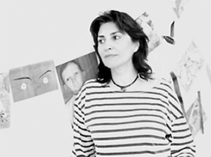

<figure>
	<br>
	<sub>Afsoon</sub>
</figure>	
<aside>
	<h3>AFSOON</h3>
	<p>
		AFSOON est née à Téhéran dans les années 60 où elle a passé toute son enfance avant de déménager pour San Francisco puis Londres où elle réside désormais. Sa vie de nomade se reflète dans son travail dans lequel l’Occident fusionne avec l’Orient. Le résultat nous est à la fois familier et lointain. Utilisant la gravure, la photographie et le collage, son œuvre est riche, ludique et laisse l’œil du public interpréter à sa manière.<br><br>
		La série ‘Fairytales Icons’ que la Galerie Nicolas Hugo a choisi de montrer pour l’exposition ‘I RAN WITH IRAN’ est un échantillon de personnalités qu’elle a admiré et dont elle a rêvé durant son enfance en Iran. Un senti- ment d’espoir, de rêves et de désirs.<br><br>
		AFSOON est représentée par la Xerxès Gallery à Londres et LTMH Gallery à New York, elle a également été exposée au British Museum à Londres, où deux de ses travaux font partie de la collection permanente. C’est un grand honneur de la recevoir, d’autant plus que c’est la première fois qu’elle est exposée en France.<br><br>
		AFSOON vit et travaille à Londres au Royaume-Uni.
	</p>
</aside>
